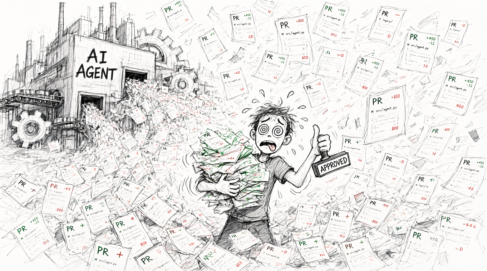

You probably asked an AI agent to refactor legacy code. It changed the implementation, rewrote the unit tests, and reported a green build.
You may even have asked it to follow TDD: write a failing test, implement the change, then run the tests. But when the same agent chooses both implementation and expectations, a shared mistaken assumption can make the result feedback, not independent verification.
Then comes the diff, implementation and tests line by line. The PR stalls, or you keep reading past the point where you can tell whether the tests still protect the behavior.
That’s review exhaustion, not confidence: the tests may agree with the code and still fail to protect what users need.

So what should a human review instead?
Not every changed line. Let an AI review agent flag suspicious changes, missed cases, and likely defects, but treat those findings as leads, not certification. Then review the spec tests: a small set of human-readable checks describing what the system must do. They provide a compact view of proposed behavior; changes to them are product decisions, not routine test maintenance.
That’s when I started asking: do the review habits and quality checks we’ve spent years building still fit work generated this way? And if they don’t, how should they evolve?
We automated the implementation, and we kept the verification rituals built for hand-written implementation. That’s bolting a jet engine onto a horse cart and wondering why the ride feels strange.
So here’s my claim, and I’ll defend it:
Unit tests aren’t dead because testing died. They’re dead because the unit moved.
A test can protect the wrong thing
We used to organize confidence around the small pieces we wrote. Now an agent chooses and reshapes those pieces. Tests tied to methods and mocks can break when design changes; worse, implementation and tests can share the same mistaken assumption. A green result may show only that the pieces agree.
The test pyramid favored unit tests because they were cheap, fast, and easy to diagnose. AI makes them cheaper to produce, not to review. The cost has shifted from writing tests to keeping evidence trustworthy.
There is a token bill, too. Tools like RTK and Caveman reduce context and output, but ask what those tokens buy. A method may need normal, boundary, and failure tests, each with setup and assertions. If agents generate them from the same assumptions as the implementation, review effort buys little confidence. At 80% to 90% line coverage, unit-test code could plausibly reach 50% to 200% of production code. That is my rough estimate, not a measured benchmark; coverage shows what ran, not whether tests are good. Do the tests earn their review and maintenance cost?
What I’m proposing
This is not a ban on unit tests, but a shift in where confidence rests. Generated implementation is easy to reshape; trustworthy evidence is not. Keep tests tied to behavior and update them when requirements change.
We become spec developers, shaping and maintaining executable descriptions of expected behavior while agents do more implementation. That means deciding what matters, what evidence demonstrates it, and how the specification changes with requirements.
Plain language does not make a spec correct. If it says one reservation succeeds when one item is available but says nothing about two customers arriving at once, the implementation has a blind spot: it may pass every written scenario and still oversell inventory. People must decide which concurrent outcomes, edge cases, and invariants are required; an agent can help propose them, but cannot certify its own interpretation.
Complementary evidence, chosen by risk
The change is not “run more tests” or follow a fixed sequence. These practices answer different questions and complement one another. Choose the evidence that fits the change and its risks.
Agree on behavior and review the design. Define what must be true, then inspect the agent’s proposed component boundaries, data ownership, and failure handling before those choices spread through code. A design that exposes a missing requirement should send us back to the spec, not quietly redefine it.
Test behavior at the relevant boundaries. Keep focused unit tests for algorithms and invariants, and run spec tests through the real application boundary for capability-level guarantees that should remain meaningful as internals and design evolve. When intended behavior changes, revise the spec tests deliberately. See spec tests at real application boundaries.
Check compatibility between services. Verify API, event, database, and provider assumptions with contract and integration tests; a local mock alone may agree with the same wrong assumption as the implementation. See contract and integration testing.
Make repeatable quality rules executable. Build, format, analyze, and enforce the quality and security expectations the repository has made explicit. See how deterministic quality gates steer AI-generated code.
Assess operational risk. A payment or data migration may warrant representative load, failure, compatibility, rollout, and rollback checks. A small isolated change may not. This is not a new checklist: choose evidence by the cost of a missed failure. In the conclusion, we consider what these checks still cannot prove.
Unit tests still matter
“Unit tests are dead” is a provocation, not a deletion command.
A tricky algorithm or security invariant still deserves focused tests. A simple capability does not need twenty tests for private plumbing just because it is familiar.
Choose tests by risk. Not by ritual.
The smallest useful unit of confidence is the behavior we agreed to protect, not always a method or class.
The series
- Unit Tests Are Dead. The Unit Moved. (this article)
- Spec Tests at the Service Boundary
- Contract Tests for AI-Generated Service Integrations
- Deterministic Quality Gates for AI Code
- What Our Tests Don't Prove